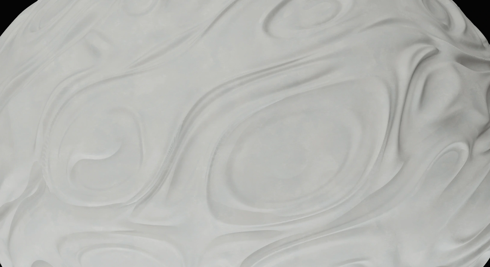
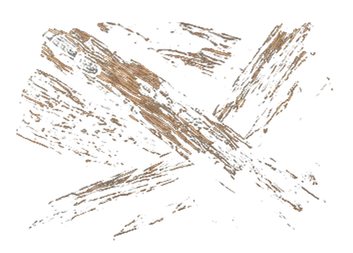
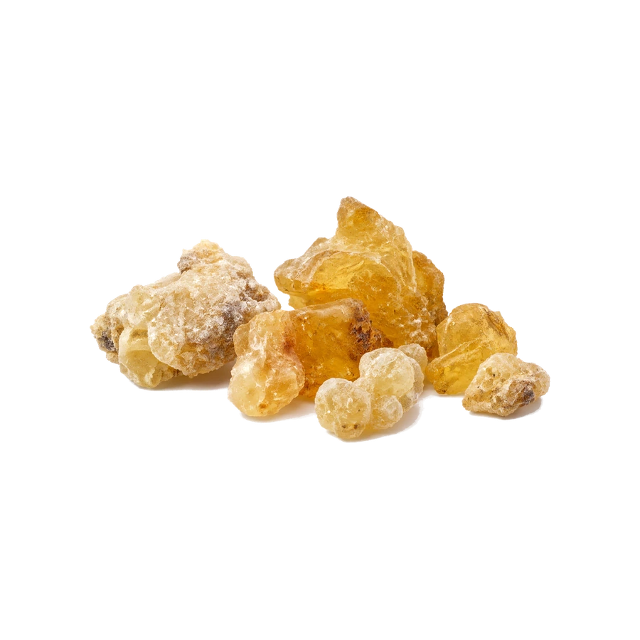
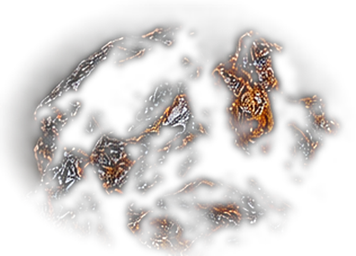
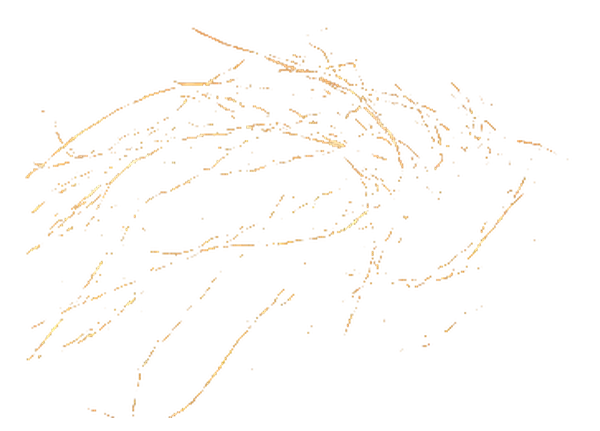
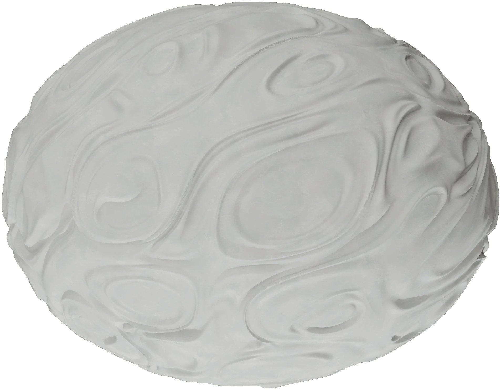
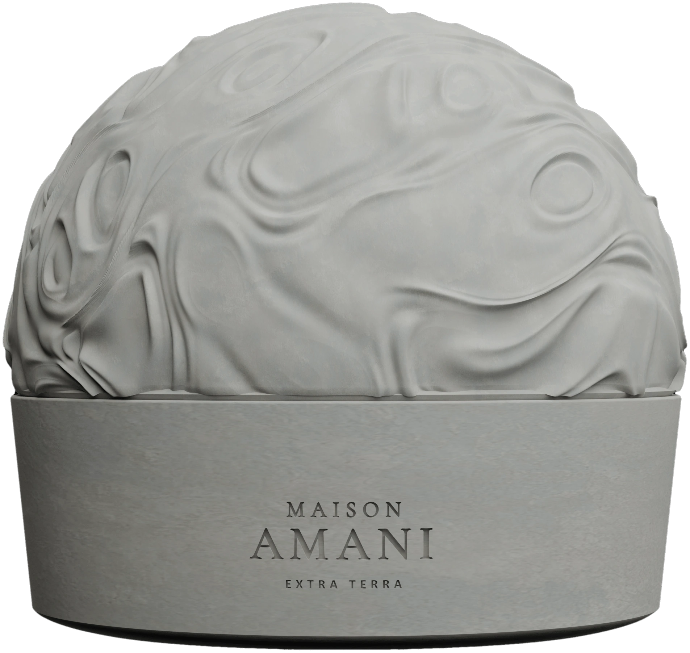
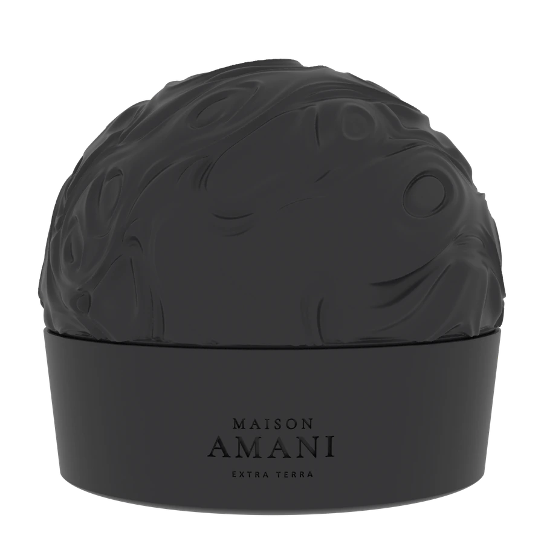

Before the light,
there is the object.
001

Not from here.
A vessel for light and scent.





The rest is still sealed.



Night
Day
The vessel stays.The light changes.

001
Light, in form.
- Object
- 001
- Form
- Vessel
- Light
- Candle
- Scent
- Sealed
- Refill
- Yes